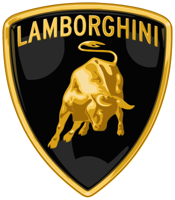
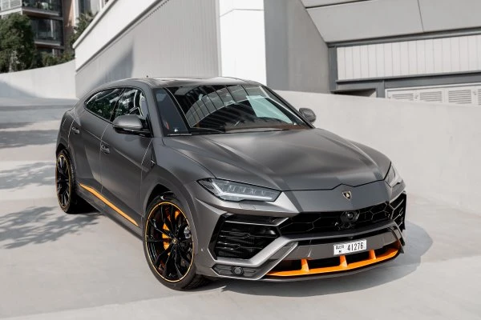
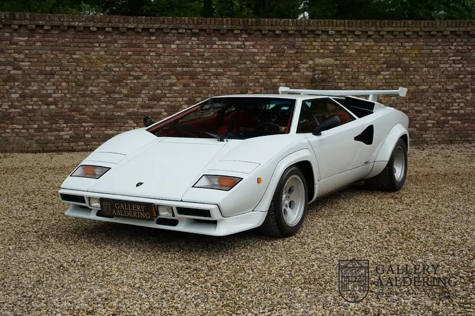
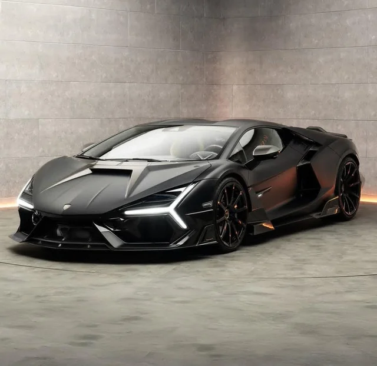

Ferruccio Lamborghini fondò l’azienda nel 1963 a Sant’Agata Bolognese. Dopo il successo nel settore dei trattori, decise di creare auto sportive in grado di rivaleggiare con Ferrari.
Lamborghini scelse come simbolo il toro, segno zodiacale di Ferruccio, e sinonimo di potenza e aggressività. Ogni modello riflette questa forza, con nomi ispirati al mondo delle corride.
Negli anni ’70 e ’80, modelli come la Countach e la Diablo hanno rivoluzionato il design automobilistico, introducendo linee futuristiche e porte ad ali di gabbiano.
Oggi Lamborghini unisce prestazioni estreme e tecnologia ibrida in modelli come la Revuelto, continuando a rappresentare il lusso e l’audacia italiana nel mondo.
| AUTO PIÙ VENDUTA | AUTO STORICA | AUTO CON PIÙ PRESTAZIONI |
|---|---|---|
|
 Lamborghini UrusIl primo SUV ad alte prestazioni firmato Lamborghini, unisce potenza e comfort quotidiano. |
 Lamborghini CountachUn’icona degli anni ’80, simbolo di design estremo e innovazione meccanica. |
 Lamborghini RevueltoL’attuale supercar ibrida V12 da oltre 1000 CV, rappresenta il futuro del marchio. |